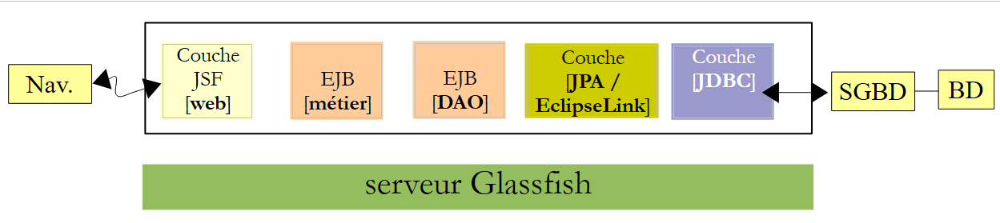
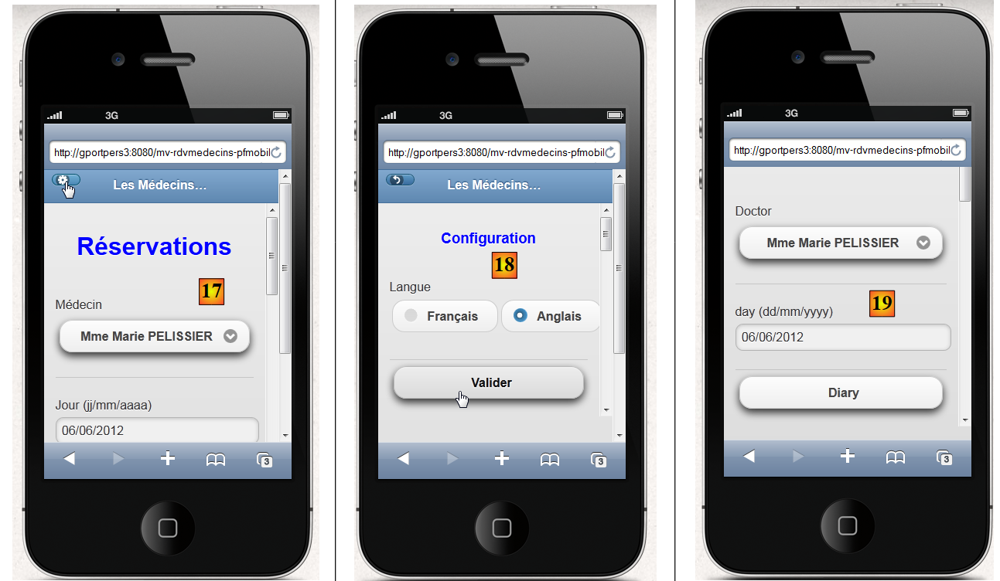
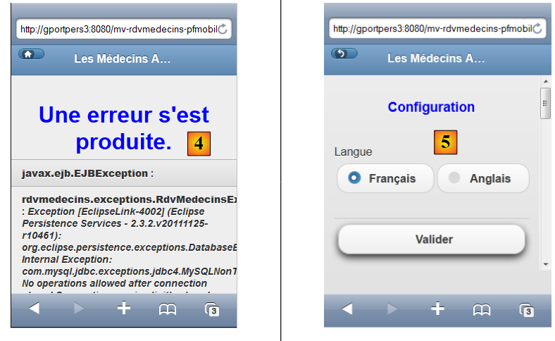
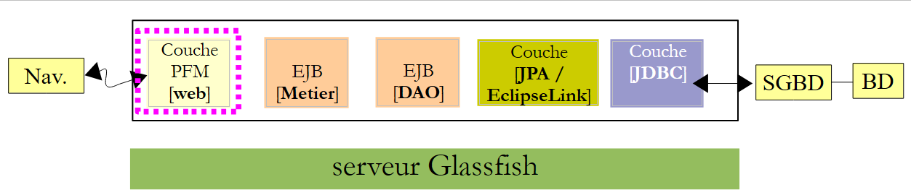
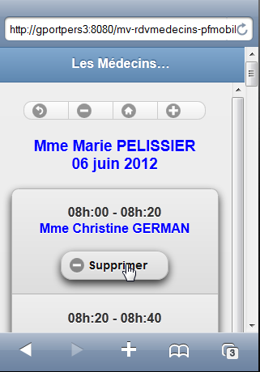
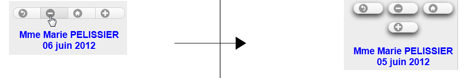
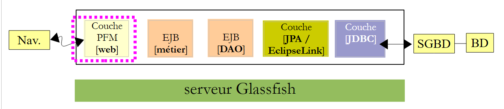
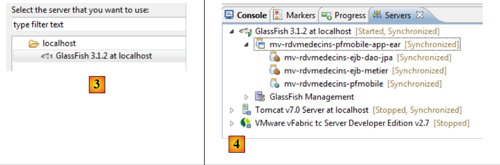

9. Application exemple 05 : rdvmedecins-pfm-ejb
Rappelons la structure de l'application exemple 01 JSF / EJB développée pour le serveur Glassfish :
 |
Nous ne changeons rien à cette architecture si ce n'est la couche web qui sera ici réalisée à l'aide de JSF, Primefaces et Primefaces mobile. Le navigateur cible sera celui d'un mobile.
 |
Nous avons développé deux applications avec Glassfish :
- l'application 01 utilisait JSF / EJB et avait une interface assez rustique,
- l'application 03 utilisait PF / EJB et avait une interface riche.
Du fait du faible nombre de composants disponibles dans Primefaces mobile, nous allons revenir à l'interface rustique de l'application 01. Par ailleurs, les vues devront pouvoir s'adapter à la taille réduite des écrans de mobiles.
9.1. Les vues
Pour fixer les idées, nous donnons quelques vues de l'application exécutée dans le simulateur d'un iphone 4 :
 |
- en [1], la page d'accueil. On notera qu'il a fallu cette fois donner le nom de la machine (on peut aussi donner son adresse IP), parce qu'avec la machine localhost, ça n'affichait rien,
- en [2], le combo des médecins,
- en [3], la date désirée pour le rendez-vous,
- en [4], le bouton pour demander l'agenda du jour,
- en [5], la nouvelle vue affiche les créneaux horaires du médecin,
- en [6], une série de boutons pour naviguer dans le calendrier,
- en [7], un message pour rappeler le médecin et le jour,
- en [8], un créneau horaire pour réserver. On le fait,
 |
- en [9], la vue de choix du client,
- en [10], un message rappelant le médecin, le jour et le créneau horaire concernés par le rendez-vous,
- en [11], le combo des clients,
- en [12], le bouton de validation,
- en [13], la validation nous fait revenir sur l'agenda,
- en [14], le créneau horaire occupé est désormais réservé. On va maintenant supprimer la réservation,
 |
- en [15], on reste sur la même vue,
- mais en [16], le rendez-vous a été supprimé,
Il est possible dans la page d'accueil de changer de langue [17], [18], [19] :
 |
Enfin, on a prévu une vue d'erreurs :
 |
9.2. Le projet Netbeans
Le projet Netbeans est le suivant :
 |
- [mv-rdvmedecins-ejb-dao-jpa] : projet EJB des couches [DAO] et [JPA] de l'exemple 01,
- [mv-rdvmedecins-ejb-metier] : projet EJB de la couche [métier] de l'exemple 01,
- [mv-rdvmedecins-pfmobile] : projet de la couche [web] / Primefaces mobile – nouveau,
- [mv-rdvmedecins-pfmobile-app-ear] : projet d'entreprise pour déployer l'application sur le serveur Glassfish – nouveau.
9.3. Le projet d'entreprise
Le projet d'entreprise ne sert qu'au déploiement des trois modules [mv-rdvmedecins-ejb-dao-jpa], [mv-rdvmedecins-ejb-metier], [mv-rdvmedecins-pfmobile] sur le serveur Glassfish. Le projet Netbeans est le suivant :
 |
Le projet n'existe que pour ces trois dépendances [1] définies dans le fichier [pom.xml] de la façon suivante :
<?xml version="1.0" encoding="UTF-8"?>
<project xmlns="http://maven.apache.org/POM/4.0.0" xmlns:xsi="http://www.w3.org/2001/XMLSchema-instance" xsi:schemaLocation="http://maven.apache.org/POM/4.0.0 http://maven.apache.org/xsd/maven-4.0.0.xsd">
<modelVersion>4.0.0</modelVersion>
...
<groupId>istia.st</groupId>
<artifactId>mv-rdvmedecins-pfmobile-app-ear</artifactId>
<version>1.0-SNAPSHOT</version>
<packaging>ear</packaging>
<name>mv-rdvmedecins-pfmobile-app-ear</name>
...
<dependencies>
<dependency>
<groupId>${project.groupId}</groupId>
<artifactId>mv-rdvmedecins-ejb-dao-jpa</artifactId>
<version>${project.version}</version>
<type>ejb</type>
</dependency>
<dependency>
<groupId>${project.groupId}</groupId>
<artifactId>mv-rdvmedecins-ejb-metier</artifactId>
<version>${project.version}</version>
<type>ejb</type>
</dependency>
<dependency>
<groupId>${project.groupId}</groupId>
<artifactId>mv-rdvmedecins-pfmobile</artifactId>
<version>${project.version}</version>
<type>war</type>
</dependency>
</dependencies>
</project>
- lignes 6-9 : l'artifact Maven du projet d'entreprise,
- lignes 14-33 : les trois dépendances du projet. On notera bien le type de celles-ci (lignes 19, 25, 31).
Pour exécuter l'application web, il faudra exécuter ce projet d'entreprise.
9.4. Le projet web Primefaces mobile
Le projet web Primefaces mobile est le suivant :
 |
- en [1], les pages du projet. La page [index.xhtml] est l'unique page du projet. Elle comporte cinq vues [vue1.xhtml], [vue2.xhtml], [vue3.xhtml], [vueErreurs.xhtml] et [config.xhtml],
- en [2], les beans Java. Le bean [Application] de portée application, le bean [Form] de portée session. La classe [Erreur] encapsule une erreur,
- en [3], les fichiers de messages pour l'internationalisation,
- en [4], les dépendances. Le projet web a des dépendances sur le projet EJB de la couche [DAO], le projet EJB de la couche [métier] et Primefaces mobile pour la couche [web].
9.5. La configuration du projet
La configuration du projet est celle des projets Primefaces ou JSF que nous avons étudiés. Nous listons les fichiers de configuration sans les réexpliquer.
 |  |
[web.xml] : configure l'application web.
<?xml version="1.0" encoding="UTF-8"?>
<web-app version="3.0" xmlns="http://java.sun.com/xml/ns/javaee" xmlns:xsi="http://www.w3.org/2001/XMLSchema-instance" xsi:schemaLocation="http://java.sun.com/xml/ns/javaee http://java.sun.com/xml/ns/javaee/web-app_3_0.xsd">
<context-param>
<param-name>javax.faces.PROJECT_STAGE</param-name>
<param-value>Development</param-value>
</context-param>
<context-param>
<param-name>javax.faces.FACELETS_SKIP_COMMENTS</param-name>
<param-value>true</param-value>
</context-param>
<servlet>
<servlet-name>Faces Servlet</servlet-name>
<servlet-class>javax.faces.webapp.FacesServlet</servlet-class>
<load-on-startup>1</load-on-startup>
</servlet>
<servlet-mapping>
<servlet-name>Faces Servlet</servlet-name>
<url-pattern>/faces/*</url-pattern>
</servlet-mapping>
<session-config>
<session-timeout>
30
</session-timeout>
</session-config>
<welcome-file-list>
<welcome-file>faces/index.xhtml</welcome-file>
</welcome-file-list>
<error-page>
<error-code>500</error-code>
<location>/faces/exception.xhtml</location>
</error-page>
<error-page>
<exception-type>Exception</exception-type>
<location>/faces/exception.xhtml</location>
</error-page>
</web-app>
On notera, ligne 26 que la page [index.xhtml] est la page d'accueil de l'application.
[faces-config.xml] : configure l'application JSF
<?xml version='1.0' encoding='UTF-8'?>
<!-- =========== FULL CONFIGURATION FILE ================================== -->
<faces-config version="2.0"
xmlns="http://java.sun.com/xml/ns/javaee"
xmlns:xsi="http://www.w3.org/2001/XMLSchema-instance"
xsi:schemaLocation="http://java.sun.com/xml/ns/javaee http://java.sun.com/xml/ns/javaee/web-facesconfig_2_0.xsd">
<application>
<resource-bundle>
<base-name>
messages
</base-name>
<var>msg</var>
</resource-bundle>
<message-bundle>messages</message-bundle>
<default-render-kit-id>PRIMEFACES_MOBILE</default-render-kit-id>
</application>
</faces-config>
[beans.xml] : vide mais nécessaire pour l'annotation @Named
<?xml version="1.0" encoding="UTF-8"?>
<beans xmlns="http://java.sun.com/xml/ns/javaee"
xmlns:xsi="http://www.w3.org/2001/XMLSchema-instance"
xsi:schemaLocation="http://java.sun.com/xml/ns/javaee http://java.sun.com/xml/ns/javaee/beans_1_0.xsd">
</beans>
[messages_fr.properties] : le fichier des messages en français
# page
page.titre=Les M\u00e9decins Associ\u00e9s
format.date=dd/MM/yyyy
format.date_detail=dd/MM/yyyy
# vue1
vue1.header=Les M\u00e9decins Associ\u00e9s - R\u00e9servations
# formulaire 1
form1.titre=R\u00e9servations
form1.medecin=M\u00e9decin
form1.jour=Jour (jj/mm/aaaa)
form1.date.requise=La date est n\u00e9cessaire
form1.date.invalide=La date est invalide
form1.date.invalide_detail=La date est invalide
form1.agenda=Agenda
form1.options=Options
# formulaire 2
form2.titre={0} {1} {2}<br/>{3}
form2.titre_detail={0} {1} {2}<br/>{3}
form2.retour=Retour
form2.supprimer=Supprimer
form2.reserver=R\u00e9server
form2.precedent=Jour pr\u00e9c\u00e9dent
form2.suivant=Jour suivant
form2.today=Aujourd'hui
# formulaire 3
form3.client=Client
form3.valider=Valider
form3.titre={0} {1} {2}<br/>{3}<br/>{4,number,#00}h:{5,number,#00}-{6,number,#00}h:{7,number,#00}
form3.titre_detail={0} {1} {2}<br/>{3}<br/>{4,number,#00}h:{5,number,#00}-{6,number,#00}h:{7,number,#00}
form3.retour=Retour
# erreur
erreur.titre=Une erreur s'est produite.
# config
config.retour=Retour
config.titre=Configuration
config.langue=Langue
config.langue.francais=Fran\u00e7ais
config.langue.anglais=Anglais
config.valider=Valider
#exception
exception.titre=Application indisponible. Veuillez recommencer ult\u00e9rieurement.
[messages_en.properties] : le fichier des messages en anglais
# page
page.titre=The Associated Doctors
format.date=dd/MM/yyyy
format.date_detail=dd/MM/yyyy
# vue1
vue1.header=The Associated Doctors - Reservations
# formulaire 1
form1.titre=Reservations
form1.medecin=Doctor
form1.jour=day (dd/mm/yyyy)
form1.date.requise=The date is necessary
form1.date.invalide=Invalid date
form1.date.invalide_detail=invalid date
form1.agenda=Diary
form1.options=Options
# formulaire 2
form2.titre={0} {1} {2}<br/>{3}
form2.titre_detail={0} {1} {2}<br/>{3}
form2.retour=Back
form2.supprimer=Delete
form2.reserver=Reserve
form2.precedent=Previous Day
form2.suivant=Next Day
form2.today=Today
# formulaire 3
form3.client=Patient
form3.valider=Validate
form3.titre={0} {1} {2}<br/>{3}<br/>{4,number,#00}h:{5,number,#00}-{6,number,#00}h:{7,number,#00}
form3.titre_detail={0} {1} {2}<br/>{3}<br/>{4,number,#00}h:{5,number,#00}-{6,number,#00}h:{7,number,#00}
form3.retour=Back
# erreur
erreur.titre=Some error happened
# config
config.retour=Back
config.titre=Configuration
config.langue=Language
config.langue.francais=French
config.langue.anglais=English
config.valider=Validate
#exception
exception.titre=Application not available. Please try again later.
9.6. La page [index.xhtml]
 |
Le projet affiche toujours la même page, la page [index.xhtml] suivante :
<f:view xmlns="http://www.w3.org/1999/xhtml"
xmlns:f="http://java.sun.com/jsf/core"
xmlns:h="http://java.sun.com/jsf/html"
xmlns:ui="http://java.sun.com/jsf/facelets"
xmlns:p="http://primefaces.org/ui"
xmlns:pm="http://primefaces.org/mobile"
contentType="text/html"
locale="#{form.locale}">
<pm:page title="#{msg['page.titre']}">
<pm:view id="vue1">
<ui:fragment rendered="#{form.form1Rendered}">
<ui:include src="vue1.xhtml"/>
</ui:fragment>
<ui:fragment rendered="#{form.erreurInit}">
<ui:include src="vueErreurs.xhtml"/>
</ui:fragment>
</pm:view>
<pm:view id="vue2">
<ui:fragment rendered="#{form.form2Rendered}">
<ui:include src="vue2.xhtml"/>
</ui:fragment>
</pm:view>
<pm:view id="vue3">
<ui:fragment rendered="#{form.form3Rendered}">
<ui:include src="vue3.xhtml"/>
</ui:fragment>
</pm:view>
<pm:view id="vueErreurs">
<ui:fragment rendered="#{form.erreurRendered}">
<ui:include src="vueErreurs.xhtml"/>
</ui:fragment>
</pm:view>
<pm:view id="config">
<ui:include src="config.xhtml"/>
</pm:view>
</pm:page>
</f:view>
- ligne 8 : la page est internationalisée (attribut locale),
- ligne 10 : la page contient cinq vues : vue1 ligne 11, vue2 ligne 19, vue3 ligne 24, vueErreurs ligne 29, config ligne 34. A un moment donné seule l'une de ces vues est visible. Au démarrage de l'application, c'est la vue vue1 qui est affichée. Ici, on a rencontré la difficulté suivante : si l'initialisation de l'application s'est bien passée, on doit afficher [vue1.xhtml], sinon c'est [vueErreurs.xhtml] qui doit être affichée. On a réglé le problème en faisant en sorte que le contenu de la vue vue1 soit géré par le modèle qui donne des valeurs aux booléens [Form].form1rendered (ligne 12) et [Form].erreurInit (ligne 15) pour fixer le contenu de vue1 (ligne 11),
Dans un simulateur, la vue [vue1.xhtml] a le rendu [1], la vue [vue2.xhtml] le rendu [2], la vue [vue3.xhtml] le rendu [3] :
 |
la vue [vueErreurs.xhtml] le rendu [4], la vue [config.xhtml] le rendu [5] :
 |
9.7. Les beans du projet
 |
La classe du paquetage [utils] a déjà été présentée : la classe [Messages] est une classe qui facilite l'internationalisation des messages d'une application. Elle a été étudiée au paragraphe 2.8.5.7.
9.7.1. Le bean Application
Le bean [Application.java] est un bean de portée application. On se rappelle que ce type de bean sert à mémoriser des données en lecture seule et disponibles pour tous les utilisateurs de l'application. Ce bean est le suivant :
package beans;
import javax.ejb.EJB;
import javax.enterprise.context.ApplicationScoped;
import javax.inject.Named;
import rdvmedecins.metier.service.IMetierLocal;
@Named(value = "application")
@ApplicationScoped
public class Application {
// couche métier
@EJB
private IMetierLocal metier;
public Application() {
}
// getters
public IMetierLocal getMetier() {
return metier;
}
}
- ligne 8 : on donne au bean le nom application,
- ligne 9 : il est de portée application,
- lignes 13-14 : une référence sur l'interface locale de la couche [métier] lui sera injectée par le conteneur EJB du serveur d'application. Rappelons-nous l'architecture de l'application :
 |
L'application PFM et l'EJB [Metier] vont s'exécuter dans la même JVM (Java Virtual Machine). Donc la couche [PFM] va utiliser l'interface locale de l'EJB. C'est tout. Le bean [Application] ne contient rien d'autre. Pour avoir accès à la couche [métier], les autres beans iront la chercher dans ce bean.
9.7.2. Le bean [Erreur]
La classe [Erreur] est la suivante :
package beans;
public class Erreur {
public Erreur() {
}
// champ
private String classe;
private String message;
// constructeur
public Erreur(String classe, String message){
this.setClasse(classe);
this.message=message;
}
// getters et setters
...
}
- ligne 9, le nom d'une classe d'exception si une exception a été lancée,
- ligne 10 : un message d'erreur.
9.7.3. Le bean [Form]
Son code est le suivant :
package beans;
...
@Named(value = "form")
@SessionScoped
public class Form implements Serializable {
public Form() {
}
// bean Application
@Inject
private Application application;
private IMetierLocal metier;
// cache de la session
private List<Medecin> medecins;
private List<Client> clients;
private Map<Long, Medecin> hMedecins = new HashMap<Long, Medecin>();
private Map<Long, Client> hClients = new HashMap<Long, Client>();
// modèle
private Long idMedecin;
private Date jour = new Date();
private String strJour;
private Boolean form1Rendered;
private Boolean form2Rendered;
private Boolean form3Rendered;
private Boolean erreurRendered;
private String form2Titre;
private String form3Titre;
private AgendaMedecinJour agendaMedecinJour;
private Long idCreneauChoisi;
private Medecin medecin;
private Long idClient;
private CreneauMedecinJour creneauChoisi;
private List<Erreur> erreurs;
private Boolean erreurInit = false;
private String action;
private String locale = "fr";
private String msgErreurDate = "";
private SimpleDateFormat dateFormatter;
private Boolean erreurDate;
@PostConstruct
private void init() {
System.out.println("init");
// au départ pas d'erreur
erreurInit = false;
// le formatage des dates
dateFormatter = new SimpleDateFormat(Messages.getMessage(null, "format.date", null).getSummary());
dateFormatter.setLenient(false);
// le jour courant
strJour = dateFormatter.format(jour);
// on récupère la couche métier
metier = application.getMetier();
// on met les médecins et les clients en cache
try {
medecins = metier.getAllMedecins();
clients = metier.getAllClients();
} catch (Throwable th) {
// on note l'erreur
erreurInit = true;
prepareVueErreur(th);
return;
}
// vérification des listes
if (medecins.size() == 0) {
// on note l'erreur
erreurInit = true;
erreurs = new ArrayList<Erreur>();
erreurs.add(new Erreur("", "La liste des médecins est vide"));
}
if (clients.size() == 0) {
// on note l'erreur
erreurInit = true;
erreurs = new ArrayList<Erreur>();
erreurs.add(new Erreur("", "La liste des clients est vide"));
}
// erreur ?
if (erreurInit) {
// la vue des erreurs est affichée
setForms(false, false, false, true);
return;
}
// les dictionnaires
for (Medecin m : medecins) {
hMedecins.put(m.getId(), m);
}
for (Client c : clients) {
hClients.put(c.getId(), c);
}
// la vue 1
setForms(true, false, false, false);
}
// affichage vue
private void setForms(Boolean form1Rendered, Boolean form2Rendered, Boolean form3Rendered, Boolean erreurRendered) {
this.form1Rendered = form1Rendered;
this.form2Rendered = form2Rendered;
this.form3Rendered = form3Rendered;
this.erreurRendered = erreurRendered;
}
// préparation vueErreur
private void prepareVueErreur(Throwable th) {
// on crée la liste des erreurs
erreurs = new ArrayList<Erreur>();
erreurs.add(new Erreur(th.getClass().getName(), th.getMessage()));
while (th.getCause() != null) {
th = th.getCause();
erreurs.add(new Erreur(th.getClass().getName(), th.getMessage()));
}
// la vue des erreurs est affichée
setForms(false, false, false, true);
}
// getters et setters
..
}
- lignes 5-7 : la classe [Form] est un bean de nom form et de portée session. On rappelle qu'alors la classe doit être sérialisable,
- lignes 12-13 : le bean form a une référence sur le bean application. Celle-ci sera injectée par le conteneur de servlets dans lequel s'exécute l'application (présence de l'annotation @Inject).
- lignes 24-27 : contrôlent l'affichage des vues vue1 (ligne 24), vue2 (ligne 25), vue3 (ligne 26), vueErreurs (ligne 27),
- lignes 43-44 : la méthode init est exécutée juste après l'instanciation de la classe (présence de l'annotation @PostConstruct),
- lignes 49-50 : gèrent le format des dates. Primefaces mobile n'offre pas de calendrier. Par ailleurs, les validateurs JSF ne sont pas utilisables dans une page PFM. Aussi devrons-nous gérer à la main la saisie de la date de l'agenda,
- ligne 49 : fixe le format des dates. Ce format est pris dans les fichiers internationalisés :
format.date=dd/MM/yyyy
format.date_detail=dd/MM/yyyy
- ligne 50 : on indique qu'on ne doit pas être " laxiste " vis à vis des dates. Si on ne le fait pas, une saisie comme 32/12/2011 qui est une saisie incorrecte est considérée comme la date valide 01/01/2012,
- ligne 54 : on récupère une référence sur la couche [métier] auprès du bean [Application],
- lignes 57-58 : on demande à la couche [métier], la liste des médecins et des clients,
- lignes 66-91 : si tout s'est bien passé, les dictionnaires des médecins et des clients sont construits. Ils sont indexés par leur numéro. Ensuite, la vue [vue1.xhtml] sera affichée (ligne 93),
- ligne 59 : en cas d'erreur, le modèle de la page [vueErreurs.xhtml] est construit. Ce modèle est la liste d'erreurs de la ligne 35,
- lignes 105-115 : la méthode [prepareVueErreur] construit la liste d'erreurs à afficher. La page [index.xhtml] affiche alors la vue [vueErreurs.xhtml] (ligne 114).
La page [erreur.xhtml] est la suivante :
<?xml version='1.0' encoding='UTF-8' ?>
<!DOCTYPE html PUBLIC "-//W3C//DTD XHTML 1.0 Transitional//EN" "http://www.w3.org/TR/xhtml1/DTD/xhtml1-transitional.dtd">
<html xmlns="http://www.w3.org/1999/xhtml"
xmlns:h="http://java.sun.com/jsf/html"
xmlns:p="http://primefaces.org/ui"
xmlns:f="http://java.sun.com/jsf/core"
xmlns:pm="http://primefaces.org/mobile"
xmlns:ui="http://java.sun.com/jsf/facelets">
<!-- Vue Erreurs -->
<pm:header title="#{msg['page.titre']}" swatch="b">
<f:facet name="left">
<p:button icon="home" value=" " href="#vue1?reverse=true" />
</f:facet>
</pm:header>
<pm:content>
<div align="center">
<h1><h:outputText value="#{msg['erreur.titre']}" style="color: blue"/></h1>
</div>
<p:dataList value="#{form.erreurs}" var="erreur">
<b>#{erreur.classe}</b> : <i>#{erreur.message}</i>
</p:dataList>
</pm:content>
</html>
Elle utilise une balise <p:dataList> (lignes 21-23) pour afficher la liste des erreurs. Le bouton de la ligne 13 permet de revenir sur la vue vue1.
 |
- le bouton [1] est produit par la ligne 13. L'attribut icon fixe l'icône du bouton. Le bouton ramène à la vue vue1 (attribut href),
- l'entête [2] est produit par les lignes 11-15,
- le titre [3] est produit par la ligne 18,
- le texte [4] est produit par le modèle #{erreur.classe} de la ligne 22,
- le texte [5] est produit par le modèle #{erreur.message} de la ligne 22.
Nous allons maintenant définir les différentes phases de la vie de l'application. Pour chaque action de l'utilisateur, nous étudierons les vues concernées et les gestionnaires des événements qui s'y produisent.
9.8. L'affichage de la page d'accueil
Si tout va bien, la première vue affichée est [vue1.xhtml]. Cela donne la vue suivante :
 |
Le code de la vue [vue1.xhtml] est le suivant :
<?xml version='1.0' encoding='UTF-8' ?>
<!DOCTYPE html PUBLIC "-//W3C//DTD XHTML 1.0 Transitional//EN" "http://www.w3.org/TR/xhtml1/DTD/xhtml1-transitional.dtd">
<html xmlns="http://www.w3.org/1999/xhtml"
xmlns:h="http://java.sun.com/jsf/html"
xmlns:p="http://primefaces.org/ui"
xmlns:f="http://java.sun.com/jsf/core"
xmlns:pm="http://primefaces.org/mobile"
xmlns:ui="http://java.sun.com/jsf/facelets">
<!-- Vue 1 -->
<pm:header title="#{msg['page.titre']}" swatch="b">
<f:facet name="left">
<p:button icon="gear" value=" " href="#config" />
</f:facet>
</pm:header>
<pm:content>
<h:form id="form1">
<div align="center">
<h1><h:outputText value="#{msg['form1.titre']}" style="color: blue"/></h1>
</div>
<pm:field>
<h:outputLabel value="#{msg['form1.medecin']}" for="choixMedecin"/>
<h:selectOneMenu id="choixMedecin" value="#{form.idMedecin}">
<f:selectItems value="#{form.medecins}" var="medecin" itemLabel="#{medecin.titre} #{medecin.prenom} #{medecin.nom}" itemValue="#{medecin.id}"/>
</h:selectOneMenu>
</pm:field>
<pm:field>
<h:outputLabel value="#{msg['form1.jour']}" for="jour"/>
<p:inputText id="jour" value="#{form.strJour}"/>
<ui:fragment rendered="#{form.erreurDate}">
<p:spacer width="50px"/>
<h:outputText id="msgErreurDate" value="#{form.msgErreurDate}" style="color: red"/>
</ui:fragment>
</pm:field>
<p:commandButton value="#{msg['form1.agenda']}" update=":form1, :vue2, :vueErreurs" action="#{form.getAgenda}" />
</h:form>
</pm:content>
</html>
- lignes 11-15 : produisent l'entête [1],
- ligne 13 : produit le bouton [2]. Un clic sur celui-ci affiche la vue config (attribut href),
- ligne 19 : produit le titre [3],
- lignes 21-26 : produisent le combo des médecins [4],
- lignes 27-34 : produisent la saisie de la date [5]. Cette saisie est faite avec une balise <p:inputText> sans validateur. La validation de la date sera faite côté serveur. Si la date est incorrecte, celui-ci positionnera un message d'erreur affiché par les lignes 30-34,
 |
- ligne 35 : le bouton qui valide le formulaire. Il met à jour trois zones : form1 (le formulaire dans vue1), vue2 et vueErreurs. En effet, si la date est invalide c'est form1 qui doit être mise à jour. Si la date est correcte c'est vue2 qui doit être mise à jour. Enfin s'il se produit une exception (connexion à la base cassée par exemple), c'est vueErreurs qui doit être affichée. On peut être tenté de mettre vue1 à la place de form1 (on met à jour toute la vue). Dans ce cas, l'application bogue.
Cette vue est adossée au modèle suivant :
@Named(value = "form")
@SessionScoped
public class Form implements Serializable {
public Form() {
}
// bean Application
@Inject
private Application application;
private IMetierLocal metier;
// cache de la session
private List<Medecin> medecins;
private List<Client> clients;
// modèle
private Long idMedecin;
private Date jour = new Date();
private String strJour;
private Boolean form1Rendered;
private Boolean form2Rendered;
private Boolean form3Rendered;
private Boolean erreurRendered;
private String msgErreurDate = "";
private Boolean erreurDate;
// liste des médecins
public List<Medecin> getMedecins() {
return medecins;
}
// agenda
public String getAgenda() {
...
}
}
- le champ de la ligne 16 alimente en lecture et écriture la valeur de la liste de la ligne 23 de la page. A l'affichage initial de la page, elle fixe la valeur sélectionnée dans le combo,
- la méthode des lignes 27-29 génère les éléments du combo des médecins (ligne 24 de la vue). Chaque option générée aura pour label (itemLabel) les titre, nom, prénom du médecin et pour valeur (itemValue), l'id du médecin,
- le champ de la ligne 18 alimente en lecture / écriture le champ de saisie de la ligne 29 de la page,
- lignes 32-34 : la méthode getAgenda gère le clic sur le bouton [Agenda] de la ligne 35 de la page. Son code est le suivant :
// agenda
public String getAgenda() {
try {
// on vérifie le jour
jour = dateFormatter.parse(strJour);
// pas d'erreur
erreurDate=false;
msgErreurDate = "";
// on crée l'agenda
return getAgenda(jour);
} catch (ParseException ex) {
// msg d'erreur
erreurDate=true;
msgErreurDate = Messages.getMessage(null, "form1.date.invalide", null).getSummary();
// vue1
setForms(true, false, false, false);
return "pm:vue1";
}
}
- la méthode commence par vérifier la validité de la date saisie par l'utilisateur,
- ligne 5 : la date est parsée selon le format de date initialisé par la méthode init à l'instanciation du modèle,
- ligne 11 : s'il se produit une exception, une erreur est positionnée (ligne 13), un message d'erreur internationalisé est construit (ligne 14), la vue vue1 est préparée (ligne 16) et on affiche la vue vue1 (ligne 17),
- ligne 10 : si la date est correcte, on exécute la méthode suivante :
// agenda
public String getAgenda(Date jour) {
// aucun créneau choisi pour l'instant
creneauChoisi = null;
try {
// on récupère le médecin choisi
medecin = hMedecins.get(idMedecin);
// titre formulaire 2
form2Titre = Messages.getMessage(null, "form2.titre", new Object[]{medecin.getTitre(), medecin.getPrenom(), medecin.getNom(), new SimpleDateFormat("dd MMM yyyy").format(jour)}).getSummary();
// l'agenda du médecin pour un jour donné
agendaMedecinJour = metier.getAgendaMedecinJour(medecin, jour);
// on affiche la vue 2
setForms(false, true, false, false);
return "pm:vue2";
} catch (Throwable th) {
System.out.println(th);
// vue des erreurs
prepareVueErreur(th);
return "pm:vueErreurs";
}
}
On retrouve là un code déjà rencontré à diverses reprises. Ligne 9, un message internationalisé est construit pour la vue vue2 :
form2.titre={0} {1} {2}<br/>{3}
form2.titre_detail={0} {1} {2}<br/>{3}
On notera que nous avons mis du XHTML dans le message. Il sera affiché de la façon suivante :
 |
9.9. Afficher l'agenda d'un médecin
L'agenda du médecin est affiché par la vue [vue2.xhtml] :
 |
Le code de la vue [vue2.xhtml] est le suivant :
<?xml version='1.0' encoding='UTF-8' ?>
<!DOCTYPE html PUBLIC "-//W3C//DTD XHTML 1.0 Transitional//EN" "http://www.w3.org/TR/xhtml1/DTD/xhtml1-transitional.dtd">
<html xmlns="http://www.w3.org/1999/xhtml"
xmlns:h="http://java.sun.com/jsf/html"
xmlns:p="http://primefaces.org/ui"
xmlns:f="http://java.sun.com/jsf/core"
xmlns:pm="http://primefaces.org/mobile"
xmlns:ui="http://java.sun.com/jsf/facelets">
<!-- Vue 2 -->
<pm:header title="#{msg['page.titre']}" swatch="b"/>
<pm:content>
<h:form id="form2">
<div align="center">
<pm:buttonGroup orientation="horizontal">
<p:commandButton inline="true" icon="back" value=" " action="#{form.showVue1}" update=":vue1"/>
<p:commandButton inline="true" icon="minus" value=" " action="#{form.getPreviousAgenda}" update=":form2"/>
<p:commandButton inline="true" icon="home" value=" " action="#{form.getTodayAgenda}" update=":form2"/>
<p:commandButton inline="true" icon="plus" value=" " action="#{form.getNextAgenda}" update=":form2"/>
</pm:buttonGroup>
<h3><h:outputText value="#{form.form2Titre}" style="color: blue" escape="false"/></h3>
</div>
<p:dataList id="creneaux" type="inset" value="#{form.agendaMedecinJour.creneauxMedecinJour}" var="creneauMedecinJour">
<p:column>
<div align="center">
<h2>
<h:outputFormat value="{0,number,#00}h:{1,number,#00} - {2,number,#00}h:{3,number,#00}">
<f:param value="#{creneauMedecinJour.creneau.hdebut}" />
<f:param value="#{creneauMedecinJour.creneau.mdebut}" />
<f:param value="#{creneauMedecinJour.creneau.hfin}" />
<f:param value="#{creneauMedecinJour.creneau.mfin}" />
</h:outputFormat>
<ui:fragment rendered="#{creneauMedecinJour.rv!=null}">
<br/>
<h:outputText value="#{creneauMedecinJour.rv.client.titre} #{creneauMedecinJour.rv.client.prenom} #{creneauMedecinJour.rv.client.nom}" style="color: blue"/>
</ui:fragment>
</h2>
</div>
<div align="center">
<ui:fragment rendered="#{creneauMedecinJour.rv!=null}">
<p:commandButton inline="true" action="#{form.action}" value="#{msg['form2.supprimer']}" icon="minus" update=":form2, :vue3, :vueErreurs">
<f:setPropertyActionListener value="#{creneauMedecinJour.creneau.id}" target="#{form.idCreneauChoisi}"/>
</p:commandButton>
</ui:fragment>
<ui:fragment rendered="#{creneauMedecinJour.rv==null}">
<p:commandButton inline="true" action="#{form.action}" value="#{msg['form2.reserver']}" icon="plus" update=":form2, :vue3, :vueErreurs">
<f:setPropertyActionListener value="#{creneauMedecinJour.creneau.id}" target="#{form.idCreneauChoisi}"/>
</p:commandButton>
</ui:fragment>
</div>
</p:column>
</p:dataList>
</h:form>
</pm:content>
</html>
- lignes 11 : produit l'entête [1],
- ligne 15-20 : produit le groupe de boutons [2],
- ligne 21 : produit le titre [3]. On notera la valeur de l'attribut escape. C'est ce qui permet d'interpréter le code XHTML que nous avons mis dans form2Titre,
- ligne 24 : l'affichage des créneaux horaires est faite à l'aide d'un dataList,
- lignes 28-33 : produisent l'intitulé du créneau horaire [4],
- lignes 34-37 : affichent un fragment s'il y a un rendez-vous dans le créneau horaire,
- ligne 36 : affiche l'identité du client ayant pris le rendez-vous,
- lignes 41-45 : affichent le bouton [Supprimer] s'il y a un rendez-vous,
- lignes 46-50 : affichent le bouton [Réserver] s'il n'y a pas de rendez-vous.
Cette vue est principalement alimentée par le modèle suivant :
private AgendaMedecinJour agendaMedecinJour;
qui alimente le dataList de la ligne 24. Ce champ a été construit par la méthode getAgenda, lorsqu'on est passé de la vue vue1 à la vue vue2.
9.10. Suppression d'un rendez-vous
La suppression d'un rendez-vous correspond à la séquence suivante :
 |  |
La vue concernée par cette action est la suivante :
<ui:fragment rendered="#{creneauMedecinJour.rv!=null}">
<p:commandButton inline="true" action="#{form.action}" value="#{msg['form2.supprimer']}" icon="minus" update=":form2, :vueErreurs">
<f:setPropertyActionListener value="#{creneauMedecinJour.creneau.id}" target="#{form.idCreneauChoisi}"/>
</p:commandButton>
</ui:fragment>
- ligne 2 : le bouton [Supprimer] est associé à la méthode [Form].action (attribut action),
- ligne 3 : l'id du créneau sur lequel on est positionné sera envoyé au modèle [Form].idCreneauChoisi,
- ligne 2 : l'appel AJAX mettra à jour les zones form2 (formulaire de vue2) et la vue vueErreurs. On a en effet deux cas : sii tout se passe bien la vue vue2 sera réaffichée sinon c'est la vue vueErreurs qui le sera.
La méthode [action] est la suivante :
// action sur RV
public String action() {
// on recherche le créneau dans l'agenda
int i = 0;
Boolean trouvé = false;
while (!trouvé && i < agendaMedecinJour.getCreneauxMedecinJour().length) {
if (agendaMedecinJour.getCreneauxMedecinJour()[i].getCreneau().getId() == idCreneauChoisi) {
trouvé = true;
} else {
i++;
}
}
// a-t-on trouvé ?
if (!trouvé) {
// c'est bizarre - on réaffiche form2
setForms(false, true, false, false);
return "pm:vue2";
} else {
creneauChoisi = agendaMedecinJour.getCreneauxMedecinJour()[i];
}
// on a trouvé
// selon l'action désirée
if (creneauChoisi.getRv() == null) {
return reserver();
} else {
return supprimer();
}
}
// réservation
public String reserver() {
...
}
public String supprimer() {
try {
// suppression d'un Rdv
metier.supprimerRv(creneauChoisi.getRv());
// on remet à jour l'agenda
agendaMedecinJour = metier.getAgendaMedecinJour(medecin, jour);
// on affiche form2
setForms(false, true, false, false);
return "pm:vue2";
} catch (Throwable th) {
// vue erreurs
prepareVueErreur(th);
return "pm:vueErreurs";
}
}
- lignes 3-12 : on recherche le créneau horaire dont on a reçu l'id (ligne 7),
- si on le trouve pas, ce qui est anormal, on réaffiche vue2 (lignes 16-17),
- ligne 19 : si on le trouve, on mémorise l'objet [CreneauMedecinJour] correspondant. C'est lui qui nous donne accès au rendez-vous à supprimer,
- ligne 26 : on le supprime,
- lignes 35-48 : la méthode supprimer renvoie la vue vue2 si la suppression s'est bien passée (lignes 42-43) ou la vue vueErreurs s'il y a eu un problème (lignes 46-47).
9.11. Prise de rendez-vous
La prise de rendez-vous correspond à la séquence suivante :
 |  |
On passe de la vue vue2 à la vue vue3. Le code impliquée par cette action est le suivant :
<ui:fragment rendered="#{creneauMedecinJour.rv==null}">
<p:commandButton inline="true" action="#{form.action}" value="#{msg['form2.reserver']}" icon="plus" update=":vue3, :vueErreurs">
<f:setPropertyActionListener value="#{creneauMedecinJour.creneau.id}" target="#{form.idCreneauChoisi}"/>
</p:commandButton>
</ui:fragment>
- ligne 2 : le bouton [Réserver] est associé à la méthode [Form].action (attribut action), donc la même que pour le bouton [Supprimer]. L'appel AJAX met à jour les vues vue3 et vueErreurs selon qu'il y a ou non des erreurs lors du traitement de l'appel.
- ligne 3 : comme pour le bouton [Supprimer], l'id du créneau horaire est passé au modèle.
Le modèle qui traite cette action est le suivant :
// action sur RV
public String action() {
...
// selon l'action désirée
if (creneauChoisi.getRv() == null) {
return reserver();
} else {
return supprimer();
}
}
// réservation
public String reserver() {
try {
// titre formulaire 3
form3Titre = Messages.getMessage(null, "form3.titre", new Object[]{medecin.getTitre(), medecin.getPrenom(), medecin.getNom(), new SimpleDateFormat("dd MMM yyyy").format(jour),
creneauChoisi.getCreneau().getHdebut(), creneauChoisi.getCreneau().getMdebut(), creneauChoisi.getCreneau().getHfin(), creneauChoisi.getCreneau().getMfin()}).getSummary();
// on affiche le formulaire 3
setForms(false, false, true, false);
return "pm:vue3";
} catch (Throwable th) {
// vue erreurs
prepareVueErreur(th);
return "pm:vueErreurs";
}
}
- lignes 2-10 : la méthode action va déterminer la référence creneauChoisi de l'objet [CreneauMedecinJour] qui fait l'objet d'une réservation puis appeler la méthode reserver,
- ligne 16 : un message internationalisé est construit. C'est le suivant :
form3.titre={0} {1} {2}<br/>{3}<br/>{4,number,#00}h:{5,number,#00}-{6,number,#00}h:{7,number,#00}
form3.titre_detail={0} {1} {2}<br/>{3}<br/>{4,number,#00}h:{5,number,#00}-{6,number,#00}h:{7,number,#00}
Ce sera le titre de la vue vue3. Comme pour la vue vue2, ce titre comporte du XML. Il comporte également des paramètres formatés pour afficher les horaires du créneau,
 |
- lignes 19-20 : le vue vue3 est affichée,
- lignes 23-24 : la vue vueErreurs est affichée si on a rencontré des problèmes.
9.12. Validation d'un rendez-vous
La validation d'un rendez-vous correspond à la séquence suivante :
 |
En [1], la vue vue3 et en [2], la vue vue2 après ajout d'un rendez-vous.
Le code [vue3.xhtml] de vue3 est le suivant :
<?xml version='1.0' encoding='UTF-8' ?>
<!DOCTYPE html PUBLIC "-//W3C//DTD XHTML 1.0 Transitional//EN" "http://www.w3.org/TR/xhtml1/DTD/xhtml1-transitional.dtd">
<html xmlns="http://www.w3.org/1999/xhtml"
xmlns:h="http://java.sun.com/jsf/html"
xmlns:p="http://primefaces.org/ui"
xmlns:f="http://java.sun.com/jsf/core"
xmlns:pm="http://primefaces.org/mobile"
xmlns:ui="http://java.sun.com/jsf/facelets">
<!-- Vue 3 -->
<pm:header title="#{msg['page.titre']}" swatch="b"/>
<pm:content>
<h:form id="form3">
<p:commandButton inline="true" value=" " icon="back" action="#{form.showVue2}" update=":vue2"/>
<div align="center">
<h3><h:outputText value="#{form.form3Titre}" style="color: blue" escape="false"/></h3>
</div>
<pm:field>
<h:outputLabel value="#{msg['form3.client']}" for="choixClient"/>
<h:selectOneMenu id="choixClient" value="#{form.idClient}">
<f:selectItems value="#{form.clients}" var="client" itemLabel="#{client.titre} #{client.prenom} #{client.nom}" itemValue="#{client.id}"/>
</h:selectOneMenu>
</pm:field>
<div align="center">
<p:commandButton inline="true" value="#{msg['form3.valider']}" action="#{form.validerRv}" update=":vue2, :vueErreurs" icon="check"/>
</div>
</h:form>
</pm:content>
</html>
- ligne 16 : produit le titre de la vue [3]. On notera la valeur de l'attribut escape qui permet l'interprétation des caractères XHTML dans le titre,
- lignes 18-23 : produisent le combo des clients [4],
- ligne 25 : produit le bouton [Valider] [5]. La méthode [Form].validerRv est associée à ce bouton :
// validation Rv
public String validerRv() {
try {
// on récupère une instance du créneau choisi
Creneau creneau = metier.getCreneauById(idCreneauChoisi);
// on ajoute le Rv
metier.ajouterRv(jour, creneau, hClients.get(idClient));
// on remet à jour l'agenda
agendaMedecinJour = metier.getAgendaMedecinJour(medecin, jour);
// on affiche form2
setForms(false, true, false, false);
return "pm:vue2";
} catch (Throwable th) {
// vue erreurs
prepareVueErreur(th);
return "pm:vueErreurs";
}
}
Ce code a déjà été rencontré dans la version 01. On notera simplement l'affichage des vues :
- la vue vue2 (lignes 11-12) si tout s'est bien passé,
- la vue vueErreurs (lignes 15-16) sinon.
9.13. Annulation d'une prise de rendez-vous
Cela correspond à la séquence suivante :
 |
Le bouton [1] dans la vue [vue3.xhtml] est le suivant :
<p:commandButton inline="true" value=" " icon="back" action="#{form.showVue2}" update=":vue2"/>
La méthode [Form].showVue2 est donc appelée. Elle se contente d'afficher vue2 :
public String showVue2() {
// vue2
setForms(false, true, false, false);
return "pm:vue2?reverse=true";
}
9.14. Navigation dans le calendrier
Dans vue2, des boutons permettent de naviguer dans le calendrier :
Jour précédent :
 |
Jour suivant :
 |
Aujourd'hui :
 |
Non montré sur les copies d'écran ci-dessus, l'agenda est mis à jour et affiche les rendez-vous du nouveau jour choisi.
Les balises des trois boutons concernés sont les suivantes dans [vue2.xhtml] :
<pm:buttonGroup orientation="horizontal">
<p:commandButton inline="true" icon="back" value=" " action="#{form.showVue1}" update=":vue1"/>
<p:commandButton inline="true" icon="minus" value=" " action="#{form.getPreviousAgenda}" update=":form2"/>
<p:commandButton inline="true" icon="home" value=" " action="#{form.getTodayAgenda}" update=":form2"/>
<p:commandButton inline="true" icon="plus" value=" " action="#{form.getNextAgenda}" update=":form2"/>
</pm:buttonGroup>
Les méthode [Form].getPreviousAgenda, [Form].getNextAgenda, [Form].today ont été étudiées dans l'exemple 03.
9.15. Changement de langue d'affichage
Le changement de langue est géré par un bouton de la page d'accueil :
 |
Le code du bouton est le suivant :
<p:button icon="gear" value=" " href="#config" />
Il fait donc passer à la vue config [2]. La vue [config.xhtml] est la suivante :
<?xml version='1.0' encoding='UTF-8' ?>
<!DOCTYPE html PUBLIC "-//W3C//DTD XHTML 1.0 Transitional//EN" "http://www.w3.org/TR/xhtml1/DTD/xhtml1-transitional.dtd">
<html xmlns="http://www.w3.org/1999/xhtml"
xmlns:h="http://java.sun.com/jsf/html"
xmlns:p="http://primefaces.org/ui"
xmlns:f="http://java.sun.com/jsf/core"
xmlns:pm="http://primefaces.org/mobile"
xmlns:ui="http://java.sun.com/jsf/facelets">
<!-- Vue 1 -->
<pm:header title="#{msg['page.titre']}" swatch="b">
<f:facet name="left">
<p:button icon="back" value=" " href="#vue1?reverse=true" />
</f:facet>
</pm:header>
<pm:content>
<h:form id="frmConfig">
<div align="center">
<h3><h:outputText value="#{msg['config.titre']}" style="color: blue"/></h3>
</div>
<pm:field>
<h:outputLabel value="#{msg['config.langue']}" for="langue"/>
<h:selectOneRadio id="langue" value="#{form.locale}">
<f:selectItem itemLabel="#{msg['config.langue.francais']}" itemValue="fr"/>
<f:selectItem itemLabel="#{msg['config.langue.anglais']}" itemValue="en" />
</h:selectOneRadio>
</pm:field>
<p:commandButton value="#{msg['config.valider']}" action="#{form.configurer}" update=":vue1"/>
</h:form>
</pm:content>
</html>
- ligne 11 : fait afficher [3],
- ligne 13 : fait afficher le bouton [4]. Ce bouton permet de revenir à la vue vue1,
- ligne 17 : le formulaire de la vue,
- ligne 19 : fait afficher le titre de la vue [5],
- lignes 21-27 : font afficher les boutons radio. La valeur (itemValue) du bouton radio sélectionné sera postée au modèle [Form].locale (attribut value de la ligne 23),
- ligne 28 : fait afficher le bouton [Valider]. L'appel AJAX met à jour la vue vue1 (attribut update). La méthode appelée est [Form].configurer :
public String configurer(){
// après configuration - on réaffiche vue1
redirect();
return null;
}
private void redirect() {
// on redirige le client vers la servlet
ExternalContext ctx = FacesContext.getCurrentInstance().getExternalContext();
try {
ctx.redirect(ctx.getRequestContextPath());
} catch (IOException ex) {
Logger.getLogger(Form.class.getName()).log(Level.SEVERE, null, ex);
}
}
La méthode configurer (ligne 1) se contente de rediriger le navigateur du mobile vers l'URL de l'application. C'est donc la page [index.xhtml] qui va être chargée :
<f:view xmlns="http://www.w3.org/1999/xhtml"
xmlns:f="http://java.sun.com/jsf/core"
xmlns:h="http://java.sun.com/jsf/html"
xmlns:ui="http://java.sun.com/jsf/facelets"
xmlns:p="http://primefaces.org/ui"
xmlns:pm="http://primefaces.org/mobile"
contentType="text/html"
locale="#{form.locale}">
<pm:page title="#{msg['page.titre']}">
<pm:view id="vue1">
...
</pm:view>
...
</pm:page>
</f:view>
- ligne 8 : la vue va utiliser la langue qui vient d'être changée (attribut locale) et va afficher vue1 (ligne 11).
9.16. Conclusion
Rappelons l'architecture de l'application que nous venons de construire :
 |
Le passage à une interface pour mobiles a nécessité la réécriture des pages XHTML. Le modèle en revanche a lui peu bougé. Les couches basses [métier], [DAO], [JPA] n'ont, elles, pas bougé du tout.
9.17. Tests Eclipse
Comme nous l'avons fait pour les précédentes versions de l'application exemple, nous montrons comment tester cette version 05 avec Eclipse. Tout d'abord, nous importons dans Eclipse les projets Maven de l'exemple 05 [1] :
 |
- [mv-rdvmedecins-ejb-dao-jpa] : les couches [DAO] et [JPA],
- [mv-rdvmedecins-ejb-metier] : la couche [métier],
- [mv-rdvmedecins-pfmobile] : la couche [web] implémentée par Primefaces mobile,
- [mv-rdvmedecins-pfmobile-app] : le parent du projet d'entreprise [mv-rdvmedecins-pfmobile-app-ear]. Lorsqu'on importe le projet parent, le projet fils est automatiquement importé,
- en [2], on exécute le projet d'entreprise [mv-rdvmedecins-pfmobile-app-ear],
 |
- en [3], on choisit le serveur Glassfish,
- en [4], dans l'onglet [Servers], l'application a été déployée. Elle ne s'exécute pas d'elle-même. Il faut demander son URL [http://localhost:8080/mv-rdvmedecins-pfmobile/] dans un navigateur ou un simulateur de mobile [5] :
 |